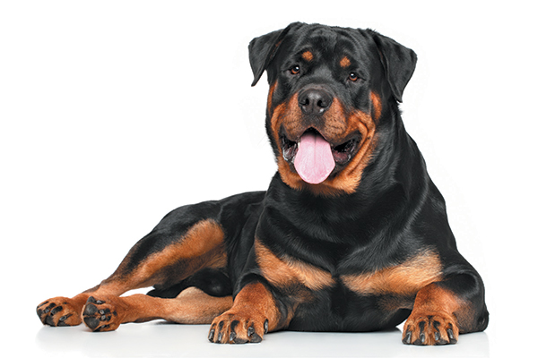

Dogs
The domestic dog (Canis lupus familiaris or Canis familiaris)[4] is a member of the genus Canis (canines), which forms part of the wolf-like canids,[5] and is the most widely abundant terrestrial carnivore.[6][7][8][9][10] The dog and the extant gray wolf are sister taxa[11][12][13] as modern wolves are not closely related to the wolves that were first domesticated,[12][13] which implies that the direct ancestor of the dog is extinct.[14] The dog was the first species to be domesticated[13][15] and has been selectively bred over millennia for various behaviors, sensory capabilities, and physical attributes.[16]
Their long association with humans has led dogs to be uniquely attuned to human behavior[17] and they are able to thrive on a starch-rich diet that would be inadequate for other canid species.[18] New research seems to show that dogs have mutations to equivalent genetic regions in humans where changes are known to trigger high sociability and somewhat reduced intelligence.[19][20] Dogs vary widely in shape, size and colors.[21] Dogs perform many roles for people, such as hunting, herding, pulling loads, protection, assisting police and military, companionship and, more recently, aiding handicapped individuals and therapeutic roles. This influence on human society has given them the sobriquet "man's best friend"
Species of Dogs
- German Shepherd Dog
The German Shepherd Dog is one of America’s most popular dog breeds — for good reason. He’s an intelligent and capable working dog. His devotion and courage are unmatched. And he’s amazingly versatile, excelling at most anything he’s trained to do: guide and assistance work for the handicapped, police and military service, herding, search and rescue, drug detection, competitive obedience and, last but not least, faithful companion.
german shepherd

- Rottweiler Dog
Rottweilers were originally dogs bred to drive cattle to market. Later they were used to pull carts for butchers. They were among the earliest police dogs and serve with honor in the military. Most important, they are popular family guardians and friends.
rottweiler

- Chihuahua
The Chihuahua dog breed‘s charms include his small size, outsize personality, and variety in coat types and colors. He’s all dog, fully capable of competing in dog sports such as agility and obedience, and is among the top 10 watchdogs recommended by experts. He loves nothing more than being with his people and requires a minimum of grooming and exercise.
chihuahua